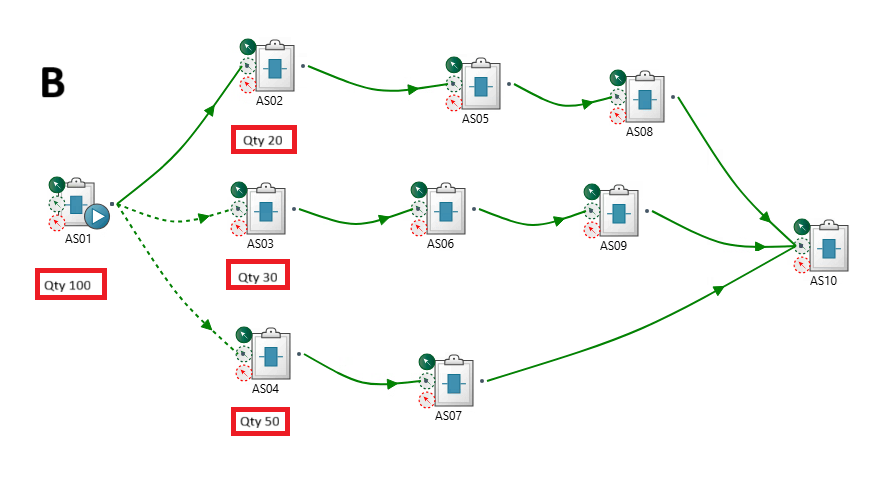
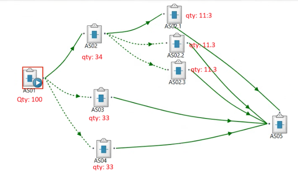

The Activity Transaction (Txn) page provides configuration and control for activity-level processing within the enhanced Core Process Model. The modeling configuration requires the use of Activity Workflow and Activity Spec (instead of the standard Workflow and Specs).
In the default discrete container model, where a container is used to track manufacturing progress, a container can only reside at a single process step at any given time. This limitation reduces flexibility for complex operations. The enhanced Core Process Model addresses this constraint by introducing Spread and Parallel Processing, extending the traditional discrete manufacturing paradigm. The following explains comparison of three processing types:
| • | Discrete: A container is processed one step at a time. Movement is strictly sequential along the defined workflow path. |
| • | Spread: Allows portions of a container (either quantity-based or parts of a non-quantity container) to be processed simultaneously across multiple steps within the same path. For example, if a container holds 100 units, 50 units can be processed at Step A while the remaining 50 units proceed to Step B concurrently. |
| • | Parallel: Enables multiple tasks or steps to execute against the same container simultaneously across different paths. For example, a single container can undergo inspection and packaging in parallel, even if these steps belong to different workflow branches. |
Instead of using the default modeling Specs and Workflow which only supports discrete processing, Spread and Parallel processing requires Activity Specs (to define specifications at the activity level), and Activity Workflows (to operate as sub-workflows within the standard workflow to orchestrate concurrent operations). For detailed definitions of Activity Specs and Activity Workflows, refer to the Opcenter Execution Medical Device and Diagnostics Modeling User Guide or the Opcenter Execution Core Modeling Guide.
The Activity Transaction page supports the following services:
| • | Activity Start |
| • | Activity Next |
| • | Activity Complete |
| • | Activity End Processing |
For quantity processing (where you assign quantities to be processed within each workflow), transactions will involve states such as Qty In Queue, Qty To Process, Qty In Process, Qty Moved and Qty Completed.
Quantity processing is supported on this page, allowing portions of the total quantity (total quantity = 100%) to be allocated across multiple paths, which can then be processed simultaneously.
| Note: | Enable the Track Qty check box in the Activity Workflow modeling configuration to activate quantity validation, ensuring that the total processed quantity does not exceed the container quantity. |
In Parallel Quantity Processing, the total quantity can be split across multiple parallel paths for simultaneous execution. In Spread Quantity Processing, portions of the quantity can be processed concurrently within the same path without waiting for the entire step to complete.
The following diagram explains Parallel Quantity processing.

Parallel Quantity Processing occurs when the total container quantity is divided into two or more workflow paths and processed simultaneously. In the example shown, the original container at AS01 starts with a quantity of 100 units, which is split across three parallel paths: AS02 with 20 units, AS03 with 30 units, and AS04 with 50 units. The combined quantity across these parallel activities must never exceed the original quantity of 100 units in AS01, ensuring accurate tracking and validation throughout the process. Optionally, you can utilize Auto Parallel Allocation (%) where you allow the application to automatically allocate equal quantity to each path.
Spread Quantity Processing within the same path is also supported in this scenario. For instance, after completing 20 units at AS04, the user can submit an Activity Next action to move those 20 units to AS07. This allows both AS04 and AS07 to remain in an In Process state simultaneously, enabling partial quantities to advance without waiting for the entire step to finish. This capability improves workflow flexibility and efficiency by supporting concurrent operations within a single path.
| Note: | Move In and Move transactions are not allowed once a container enters an Activity Workflow. Move In will be automatically performed for the first Activity Step during the Activity Start transaction if Use Queue is enabled in the Operation. |
Partial Spread Processing
Partial Spread Processing helps to manage and advance a total quantity of items through a workflow by dividing it into smaller batches (split quantities). This allows you to process different portions of the quantity at various times or along different path.
For example, a container with a quantity of 100. You might initially split this, allocating 50 to "In Queue" processing and allowing the other 50 to proceed "In Progress." This "In Progress" quantity of 50 is then further split into two paths: 20 units to AS02 and 30 units to AS03 (which then spreads to AS06). Once these transactions are completed, the processes for AS02, AS03, and AS06 are marked as 'Complete'.
The following diagram explains the Partial Spread Processing.

Later, you can process the remaining 50 units that were initially "In Queue." For instance, if you decide to process these 50 units through AS03, AS03 will then show a 'Completed Quantity' of 30 (from the previous processing) and an 'In Queue Quantity' of 50. This action will also revert the activity status for AS03 to 'InQueue' or 'InProcess', and for AS06 to 'NotSet'. If AS07 was previously 'Complete', it would also revert to 'NotSet'.
The following diagram explains the example of Partial Spread Processing.

Auto Parallel Qty Allocation
When Auto Parallel Allocation is activated in the Activity Workflow modeling page, the application will automatically distribute quantities as equally as possible across each parallel path.
For instance, if a quantity of 100 is to be split among three parallel paths, the application will assign 34, 33, and 33 to each path, respectively. The extra odd quantity (in this case, 1) will be added to the first path (e.g., AS02), resulting in a distribution of 34, 33, and 33. Another example, if the allocation is set at 60%-40% for a total quantity of 101, the first path will receive 61 and the second path will receive 40.
The following diagram explains an example of the Auto Parallel Qty Allocation where the extra odd quantity is added to the first path .

During a partial quantity "Activity Next" operation with "Auto Parallel" enabled, the system first verifies the existence of records for the subsequent paths. If existing records are found, the system permits the distribution of an insufficient quantity across these next paths. This means some paths may not receive additional quantity during this transaction. This behavior is based on the assumption that all available subsequent paths have already received at least one unit of quantity from a previous "Activity Next" transaction.
| Note: | If "Auto Parallel" is disabled in Activity Specs and "Activity Required" is set to True for multiple activities across the next parallel paths, the application will prevent proceeding with the full quantity to only one path. Instead, the quantity must be manually split and allocated across each created path, ensuring that each required path receives at least 1 unit of quantity and that 100% of the total quantity is distributed. |
This table defines the fields on the Activity Service page field definition.
|
Field |
Definition |
Type |
||||||||||||||||||||||||||||||
|
Container Information |
Header containing the container name or identifier and information about that container. You must select or enter a container on a transaction page, but all information is display-only on a transaction pop-up. Refer to "Container Information" for information. Note: The Qty is a rollup quantity of all the associated child containers. |
Required/ |
||||||||||||||||||||||||||||||
|
Current Activity Step |
Current activity step of the selected activity workflow. You must select a row in the Activity Workflow Status grid in order to display this field. Displays activities that is currently In Queue , In Process or Complete. |
Required |
||||||||||||||||||||||||||||||
|
Activity Service |
Activity services applicable for the selected current step. Enabled when the Current Activity Step is selected. Services available in the drop-down are based on the selected activity workflow and activity step. The available services include:
Only when these conditions are met can the activity workflow be finalized, enabling you to do manual Move Std to transition back to discrete processing. Alternatively, you can use the "Auto Move" in the last step in Activity Spec modeling page to automatically move out to discrete processing in Activity End Processing. |
Required |
||||||||||||||||||||||||||||||
|
Quantity |
Processing quantity for the selected activity state. When an activity is moved, the associated quantity is moved as well. Note: Only visible during 'Activity Start', 'Activity Next' and 'Activity Complete' when the Activity Workflow's 'Track Qty' is enabled and 'Auto Parallel' is disabled. When enabled, the system verifies the quantity for each activity to ensure that the total processing quantity does not exceed the container quantity. If an activity begins in the "In Queue" state with a total processing quantity of 100, and its state is then changed to 'Activity Start', this quantity of 100 is assigned to the "Qty To Process" field. As the activity advances to the next step ('Activity Next'), the quantity is subsequently reassigned to "Qty In Process". Partial quantities may be assigned at these stages, provided they do not exceed the total processing quantity of 100. |
Optional |
||||||||||||||||||||||||||||||
|
Resource |
Resource Group to assign to the Activity Spec. If a resource is selected during Activity Start service, the value will be displayed by default during Activity Next. The field is only visible when Activity Service is at Activity Start or Activity Next. |
Optional |
||||||||||||||||||||||||||||||
|
Complete Activity check box |
Select to complete the current activity. This check box is only visible when the service is Activity Next. For quantity processing, the application will verify if there is still quantity remaining in 'Qty In Queue' or 'Qty In Process' before allowing the completion of the current activity. |
Optional |
||||||||||||||||||||||||||||||
|
Next Activity Step |
This field is automatically populated and becomes required when Activity Next is performed and the current steps Auto Parallel setting is disabled. The populated selection is determined by the path selector configured in the Activity Workflow. |
Optional |
||||||||||||||||||||||||||||||
|
Activity Workflow Status grid |
Displays lists of activity workflow statuses based on the container entered. You can select the Current Activity Step from the grid. |
Display Only |
||||||||||||||||||||||||||||||
|
Activity Step |
Current stage or step within the overall process that the container is currently undergoing. |
Display Only |
||||||||||||||||||||||||||||||
|
Activity State |
Displays the current operational status of the activity step. Available states include:
|
Display Only |
||||||||||||||||||||||||||||||
|
Operation |
Operation at which the container was processed. |
Display Only |
||||||||||||||||||||||||||||||
|
Qty In Queue |
Quantity currently waiting to begin processing for this specific activity step. This is quantity that has arrived at the step but has not yet started. When the Activity State is "In Queue", the only available Activity Service is an Activity Start. After selecting Activity Start and Submit, the container is then changed to In Process state and you can proceed to move the container and no longer in queue. Note: The quantity specified during a previous "Activity Next" transaction is stored here if the current step "Use Queue" is enabled. |
Display Only |
||||||||||||||||||||||||||||||
|
Qty To Process |
Quantity ready to be processed. When an activity is started, with an entered amount, the amount will be displayed in this field. This quantity is specified when initiating 'Activity Next'. Note: Only applicable for first activity. |
Display Only |
||||||||||||||||||||||||||||||
|
Qty In Process |
Quantity actively being worked on or are currently undergoing processing within this specific activity step. |
Display Only |
||||||||||||||||||||||||||||||
|
Qty Completed |
Quantity successfully finished processing for this specific activity step and ready to move to the next stage or fully done with this step. |
Display Only |
||||||||||||||||||||||||||||||
|
Qty Moved |
Stored quantity that has been moved to the next step. |
Display Only |
||||||||||||||||||||||||||||||
|
Show/Hide additional fields |
Optional fields hidden by default when the application displays a page or pop-up. Clicking the Show control displays the fields. Clicking the Hide control hides the fields. |
Optional |
||||||||||||||||||||||||||||||
|
Comments |
Additional information or instructions for this transaction. The field accepts a maximum of 255 characters. The application truncates the data if the comments exceed 255 characters. |
Optional |
How to Use Activity Transaction Page
Follow these steps to use the Activity Transaction page:
| 1. | Open the Activity Txn page from the Container menu. The Activity Txn page appears. |
| 2. | Select or enter a container in the Container field. The application updates the container header and selection fields to display information for the specified container. Values appear only if they were entered for the container. |
| 3. | Select the Current Activity Step field from the drop-down or from the Activity Workflow Status grid. The application populates available services in the Activity Services field. |
| 4. | Enter optional information according to your business requirements. Refer to the field definitions table for information on the optional fields. |
| 5. | Click Submit on the command bar. The application clears the Container field , and displays a Status message. |
Data Collection within an Activity Workflow functions similarly to a standard workflow. Configuration is managed via the Activity Spec modeling page. Use the Data Collection Txn Map grid to define the relationship between the Transaction (Txn) and the User Data Collection.
Data collection is supported for the following transactions:
| • | Activity Txns (Activity Start, Activity Next, Activity Complete and Activity End Processing) |
| • | Collect Data |
| • | Hold and Release |
| • | Component Issue, Replace and Remove |
When Data Collection is configured for activity-specific transactions, the Activity Txn shop floor page is used. The Data Collection forms automatically populate at the bottom of the Activity Txn page based on the Activity Spec settings. The Activity Txn page includes mandatory field validation. Users cannot proceed with a transaction until all required data values are provided.
If the Collect Data transaction is defined in the Data Collection Txn Map, the Collect Data shop floor page is used instead.
| • | Select a container within an activity workflow to trigger the Activity Selection pop-up. |
| • | If the activity step has a valid Data Collection Txn Map configuration, the Collect Data page will display the corresponding Data Collection form. |
This table defines the fields on the Collect Data page and Collect Data pop-up.
|
Field |
Definition |
Type |
|
Container Information |
Header containing the container name and information about that container. You must select or enter a container on a transaction page, but all information is display-only on a transaction pop-up. Refer to "Container Information" for information. |
Required/ Display Only |
|
Activity Selection Button |
Click to view the Activity Selection pop-up which provides a list of In Process activities linked to the container. |
Optional |
|
Data Collection Def |
Data or user data collection definition for the selected container. The application updates the page to display the data collection fields for the selected definition. Note: This field appears when multiple data collections have been associated with the specified container's current activity spec. If only one data collection has been associated, the application displays those fields by default and does not display the Data Collection Def field. |
Required |
|
<data collection fields> |
Information displayed in this area depends on the definition selected in the Data Collection Def field or the single data collection associated with the specified container's current activity spec. Whether the data collection fields are required, and whether limits are displayed, depends on how the data or user data collection was defined in Modeling. |
Required/ Optional |
|
Show/Hide additional fields |
Optional fields hidden by default when the application displays a page or pop-up. Clicking the Show control displays the fields. Clicking the Hide control hides the fields. |
|
|
Resource |
Resource associated with the container. The application displays an icon indicating the availability of the selected resource. Resources are defined in Modeling. |
Optional |
|
Comments |
Additional information or instructions for this transaction or container. The field accepts a maximum of 255 characters. The application truncates the data if the comments exceed 255 characters. |
Optional |
This table defines the fields on the Activity Selection pop-up.
|
Field |
Definition |
Type |
||||||||||||
|---|---|---|---|---|---|---|---|---|---|---|---|---|---|---|
|
Activity Step |
Current stage or step within the overall process that the container is currently undergoing. |
Display Only |
||||||||||||
|
Activity State |
Current operational status of the activity step. Available states includes:
|
Display Only |
||||||||||||
|
Activity Operation |
Operation at which the container was processed |
Display Only |
||||||||||||
|
In Queue Qty |
Quantity currently waiting to begin processing for this specific activity step. This quantity has arrived at the step, but has not yet started. When the Activity State is "In Queue", the only available Activity Service is an Activity Start. After selecting Activity Start and Submit, the container is then changed to In Process state and you can proceed to move the container and no longer in queue. Note: The quantity specified during a previous "Activity Next" transaction is stored here. |
Display Only |
||||||||||||
|
To Process Qty |
Quantity ready to be processed. When an activity is started, with an entered amount, the amount will be displayed in this field. This quantity is specified when initiating 'Activity Next'. |
Display Only |
||||||||||||
|
In Process Qty |
Quantity actively being worked on or are currently undergoing processing within this specific activity step. |
Display Only |
||||||||||||
|
Completed Qty |
Quantity that has successfully finished processing for this specific activity step and is ready to move to the next stage or is fully done with this step. |
Display Only |
The Electronic Procedure (EProcedure) is integrated into the Activity Service page to provide a guided and streamlined task execution experience. It ensures clear guidance and helps reduce user errors by directing you to the appropriate step automatically.
You can access the EProcedure page using the following methods:
| • | Activity Workflow Status Grid: Selecting a relevant activity row with the 'In Process' state from the grid allows users to view and perform the associated task lists. |
| • | Independent Access: If a container is part of an activity workflow, an Activity Selection button is displayed. This button provides a list of activities linked to the container, allowing you to operate outside the Activity Service page when necessary. |
Electronic Procedure Integration and Validation
Electronic Procedure validation within an Activity Workflow operates similarly to a regular workflow, but the validation points are aligned with activity-specific transactions.
Activity Complete
| • | Applicability: Applies to normal activities (activities that are not the First Step or Last Step). |
| • | Validation: Required tasks in the Electronic Procedure are validated during the Activity Complete transaction. |
| • | Requirement: All required tasks must be completed for the Activity Complete transaction to be successful. |
Activity End Processing
| • | Applicability: Validation only applies to the first activity in the workflow. |
| • | Validation: Required tasks assigned to the first activity are validated during Activity End Processing. |
| • | Requirement: Required tasks must be finished for the Activity End Processing transaction to be successful. |
Auto Move and Last Activity Processing
| • | Auto Move Enabled: When Auto Move is active, Activity End Processing performs a MoveStd to transition the container to the parent workflow. If an Electronic Procedure is assigned to the last activity, it is validated during this MoveStd transaction. |
| • | Manual Move (Not Auto Move): If the Activity End Processing transaction executes successfully without Auto Move, the container remains at the last activity. The existing Electronic Procedure validation for the MoveStd transaction is then used to validate the procedure assigned to that final activity. |
Refer to the Opcenter Execution Medical Device and Diagnostics Modeling User Guide or the Opcenter Execution Core Modeling User Guide for information about the Activity Selection Pop-Up Field Definitions in E-Procedure modeling pages.
The Hold and Release transactions within an Activity Workflow function similarly to those in a regular workflow. These actions are performed through their respective Shop Floor pages. The following logic applies:
| • | You are not required to select a specific activity to initiate a hold. |
| • | The hold is applied specifically to either the first or last activity step, regardless of the status of other concurrent activities. |
| • | Once a container is successfully held, all Activity Transactions are prohibited. This includes: |
| • | Activity Start |
| • | Activity Next |
| • | Activity Complete |
| • | Activity End Processing |
The Release transaction functions identically whether the container is positioned in the Activity Workflow or the Regular Workflow. Releasing the container restores its ability to proceed through its assigned steps and continue with the Activity Transactions.
Refer to "Container Hold" and "Container Release" for more information.